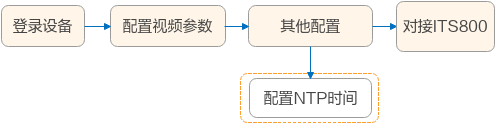

摄像机配置流程
新建场景
新建场景中摄像机的配置流程，请参见图1。如果路口摄像机需要启用违法抓拍等标准电警业务，请参见摄像机配套的产品文档、专题等资料获取相关配件信息。
配置项 |
任务描述 |
|---|---|
登录设备 |
摄像机通电后，即可在PC上通过浏览器登录摄像机。详细操作请参见登录设备。 |
配置IP地址 |
|
设备升级 |
若出厂摄像机不是最新配套商用版本，建议对相机进行升级。具体操作参考应用安装或升级。 |
安装应用 |
在使用智能交通摄像机时，请先安装应用（例如“its_app”）。具体操作步骤请参见应用安装或升级。 |
配置视频参数 |
用于全息路口的视频参数配置，如码流类别、绝对时间戳、OSD等。具体操作参考配置视频参数。 |
配置电警模式【可选】 |
在全息路口解决方案中选择“电警模式”，具体操作步骤请参见配置电警模式（可选）。 |
配置补光灯参数 |
当拍摄环境的光线不佳时，需要开启补光灯。建议在夜间配置补光灯参数，便于查看配置效果及调试。具体操作步骤请参见配置补光灯。 |
配置NTP时间 |
配置摄像机的NTP时间，使得摄像机与NTP服务器的时间同步。具体操作步骤请参见配置摄像机时间。 |
功能验证 |
在完成所有相关配置后，可验证功能是否正常运作。例如，调整摄像机的角度和聚焦，优化画面效果，以保证车牌识别准确率。具体操作步骤请参见功能验证。 |

在全息路口解决方案中，无需调整摄像机的图像参数，推荐使用默认参数值。
利旧场景

对于利旧场景，路口已配置第三方厂商的摄像机，需确保第三方厂商的摄像机满足表2中配置要求。
配置项 |
要求 |
说明 |
|---|---|---|
视频帧率 |
推荐使用25fps。若无25fps也可以设置为12fps 安装在同一路口的摄像机，帧率必须保持一致。 |
推荐使用子码流。如果不能启用子码流，需确保实况画面流畅。 |
视频分辨率 |
推荐分辨率设置为1920*1080（即1080P）或1600*1200。 |
|
实况画面流畅度 |
实况画面中的车辆无拖影现象。 |
|
接入协议 |
至少支持ONVIF、GB/T 28181协议两者中的一种以上。 |
- |
网络稳定与通畅度 |
确保摄像机的网络较为稳定、无丢帧现象，网络延迟不能高于5ms。 |
在对接的ITS800中使用ping命令测试摄像机的网络状况。 |
NTP时间 |
配置摄像机的NTP时间，由NTP服务器（即ITS800）进行授时，使得摄像机与ITS800的时间同步。 |
可参考华为摄像机的NTP时间配置过程，具体请参见配置摄像机时间。 |
请登录摄像机查看上述配置项或咨询用户。如果第三方厂商的摄像机不满足上述配置要求，需联系用户重新配置。